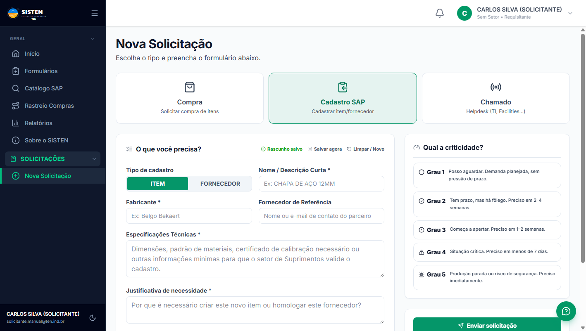
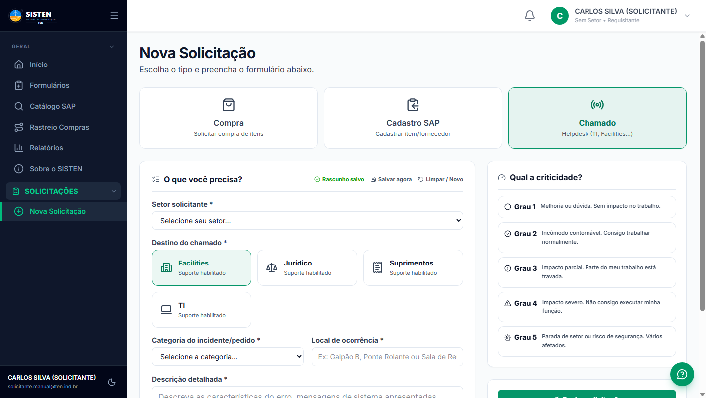
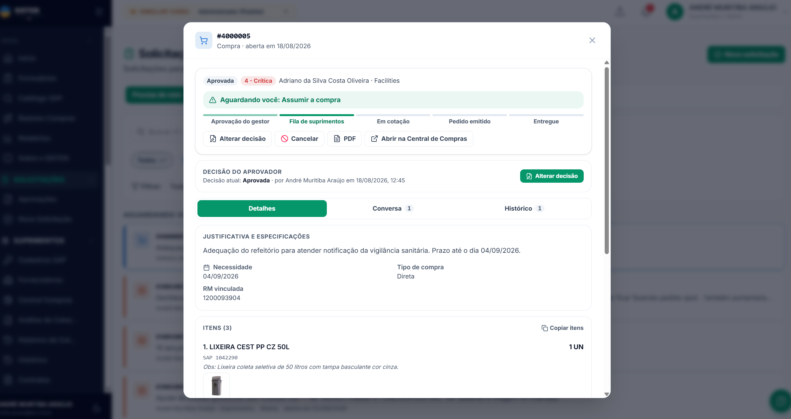
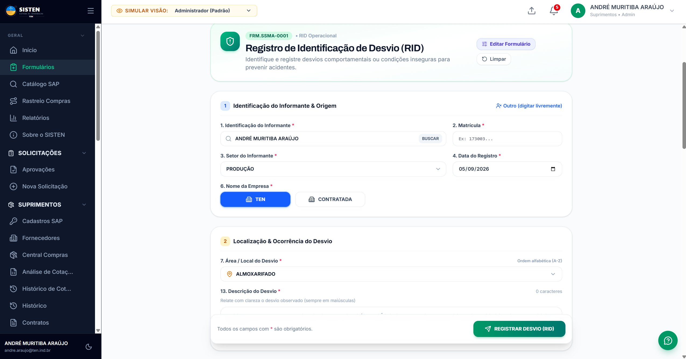
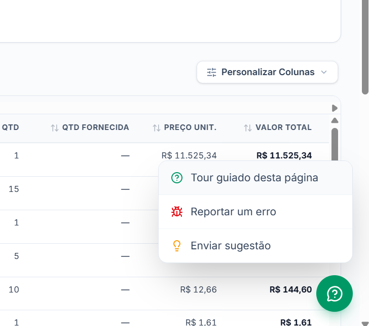

Manual Prático de Abertura de Pedidos, Catálogo SAP, Gestão de Chamados, Acompanhamento Logístico e Formulários Operacionais
📦 Abertura de Solicitações Integradas
Passo a passo completo para compras de materiais com/sem código SAP, solicitações de cadastro e abertura de chamados técnicos.
🔍 Catálogo SAP & Estoque
Pesquisa refinada por termos múltiplos (chips cumulativos), verificação de saldo e aplicação correta do código de 8 dígitos.
📊 Acompanhamento & Stepper de Status
Rastreamento visual de cada fase (aprovação, cotação, PO emitida, entrega), histórico auditável e chat com os compradores.
💡 Suporte Flutuante & Formulários
Tour guiado passo a passo em todas as telas, reporte ágil de bugs e sugestões, além do preenchimento simplificado do RID SSMA.
SISTEN • MANUAL DO SOLICITANTE
SUMÁRIO & APRESENTAÇÃO
i
Sumário Executivo & Boas-Vindas
O SISTEN (Sistema de Informação TEN) é a plataforma integrada corporativa das Torres Eólicas do Nordeste desenvolvida para unificar e acelerar toda a cadeia de suprimentos, compras, catálogo de materiais, almoxarifado, helpdesk, formulários operacionais e rastreabilidade logística.
Este manual foi elaborado para orientar você, colaborador solicitante, em todas as etapas do seu dia a dia na fábrica ou escritório — desde a identificação da sua necessidade operacional até o acompanhamento em tempo real da entrega física do item no almoxarifado.
🌐
Acesso Rápido ao Sistema
O SISTEN pode ser acessado em qualquer computador, tablet ou smartphone conectado à rede corporativa ou via internet pelo endereço oficial https://sisten.site.
Conteúdo Programático do Manual
Capítulo 1 Acesso ao SISTEN & Visão Geral da InterfacePág. 3
Capítulo 2 Catálogo de Materiais SAP & Consulta de EstoquePág. 4
Capítulo 3 Nova Solicitação: Compra de Materiais, Cadastro SAP e ChamadosPágs. 5 e 6
Capítulo 4 Escala de Criticidade & Prazos de AtendimentoPág. 7
Capítulo 5 Central de Solicitações: Gestão & Acompanhamento de Status em Tempo RealPágs. 8 e 9
Capítulo 6 Rastreio de Compras & Previsão de Entrega (Lead Time)Pág. 10
Capítulo 7 Hub de Formulários Operacionais & RID (SSMA)Pág. 11
Papel do Solicitante no Sucesso da Cadeia de Suprimentos
O solicitante é o ponto de partida de toda a cadeia operacional. Uma solicitação bem estruturada, contendo especificações técnicas completas, imagens nítidas e justificativa fundamentada, reduz em até 70% o tempo total do processo de compra e elimina retrabalhos causados por dúvidas e devoluções.
1. Identificar com Precisão
Consulte sempre o Catálogo SAP antes de abrir o pedido para aproveitar códigos já homologados e verificar saldos no almoxarifado.
2. Escolher o Canal Correto
Use a aba Compra para aquisição de materiais, Cadastro SAP para itens/fornecedores inéditos e Chamado para demandas de apoio.
3. Acompanhar a Central
Verifique com frequência a aba "Precisa de Mim" na Central de Solicitações para responder questionamentos dos compradores.
4. Utilizar o Tour de Ajuda
Em qualquer dúvida operacional sobre um campo, clique no botão verde flutuante no canto inferior para iniciar o tour guiado da página.
SISTEN • MANUAL DO SOLICITANTE
CAPÍTULO 1: ACESSO AO SISTEMA
1
Acesso ao SISTEN & Visão Geral da Interface
1.1 Tela de Login & Vitrine
O acesso ao SISTEN é protegido por credenciais corporativas. Ao acessar sisten.site, você visualiza a vitrine institucional com acesso direto:
Figura 1.1: Vitrine no portal sisten.site.
Como Entrar:
Clique no botão "ACESSE AGORA".
Digite seu E-mail corporativo (@ten.ind.br).
Informe sua Senha secreta.
(Opcional) Marque "Lembrar meu acesso".
Clique em "Entrar". Se esqueceu a senha, clique em "Esqueci minha senha".
1.2 Dashboard do Solicitante
Após a autenticação, a tela Início reúne em tempo real todas as demandas e avisos importantes para você:
Figura 1.2: Painel Início com métricas e notificações.
Destaques da Página Inicial:
Cards de Métricas: Notificações pendentes, contagem de Minhas em Aberto e pedidos sem PO.
Mural de Notificações: Alertas em tempo real de aprovações, cotações e entregas.
Acesso Rápido: Favoritos e módulos mais utilizados.
Botão de Suporte: Ícone verde no canto inferior direito para ajuda e tour guiado.
SISTEN • MANUAL DO SOLICITANTE
CAPÍTULO 2: CATÁLOGO SAP & ESTOQUE
2
Catálogo de Materiais SAP & Consulta de Estoque
Antes de solicitar qualquer compra, consulte sempre o Catálogo de Materiais SAP (menu Catálogo SAP). Esta pesquisa assegura que você utilize o código de 8 dígitos oficial da TEN, evitando compras duplicadas e aproveitando saldos já existentes no Almoxarifado Central.
Figura 2.1: Catálogo SAP com pesquisa por chips múltiplos (AND), filtros combinados e tabela técnica detalhada.
2.1 Busca Inteligente por Chips Cumulativos (AND)
A barra de busca do SISTEN permite refinar itens combinando palavras-chave. Ao digitar uma palavra e teclar Enter (ou clicar em Adicionar), ela se transforma em uma etiqueta (chip verde). O sistema filtra apenas os itens que contêm todos os termos simultaneamente (exemplo: bota + biq).
Coluna / Filtro
O que representa?
Instrução para o Solicitante
CÓDIGO SAP
Identificador numérico exclusivo de 8 dígitos no SAP corporativo.
Clique no ícone de cópia para colar o código diretamente no formulário de compra.
DESCRIÇÃO SAP
Nome técnico padronizado com termos de pesquisa grifados em amarelo.
Confira se o tamanho, voltagem e características correspondem à necessidade.
TEXTO TÉCNICO
Especificação detalhada de engenharia, normas e certificados requeridos.
Clique em "Ver mais" para inspecionar todas as propriedades técnicas do material.
STATUS SAP
Indicação de disponibilidade cadastral (Ativo, Obsoleto ou Bloqueado).
Materiais com status Obsoleto não podem ser comprados sem atualização prévia.
UNIDADE (UN)
Unidade de movimentação de estoque (PAR, UN, PC, KG, L, M, M²).
Sua solicitação deve ser expressa exatamente na mesma unidade oficial cadastrada.
💡
Vantagem Operacional do Código SAP
Solicitações com Código SAP válido pulam a etapa de busca de fornecedores do zero: os preços históricos, prazos de entrega habituais e fornecedores homologados são puxados automaticamente, reduzindo significativamente o prazo de atendimento!
SISTEN • MANUAL DO SOLICITANTE
CAPÍTULO 3: NOVA SOLICITAÇÃO (COMPRAS)
3
Como Abrir uma Nova Solicitação (Canais & Compra)
Para abrir qualquer demanda no SISTEN, clique em Nova Solicitação no menu lateral ou no botão verde "+ Nova Solicitação" presente no topo de diversas telas. O sistema centraliza 3 canais operacionais em uma única interface intuitiva.
Figura 3.1: Formulário de Compra com busca integrada ao catálogo SAP, itens múltiplos e seleção de prazo.
3.1 Os Três Canais da Nova Solicitação
🛒 1. Compra de Itens
Para solicitar materiais de almoxarifado, ferramentas, EPIs, peças de reposição ou contratação de serviços técnicos terceirizados.
📝 2. Cadastro SAP
Para solicitar a inclusão de um material inexistente no catálogo ou a homologação comercial de um novo fornecedor.
🎧 3. Chamado de Suporte Interno
Para registrar ordens de serviço de Facilities (manutenção predial), TI (sistemas/computadores), Jurídico ou Suprimentos.
3.2 Preenchimento dos Dados de Compra
Campo
Obrigatório?
Instrução de Preenchimento
Setor Solicitante
SIM
Selecione o seu setor (ex.: Operações, Manutenção, SSMA, Qualidade). Define o centro de custo de apropriação.
Tipo de Compra
SIM
Escolha entre Estoque (reposição de almoxarifado), Direta (uso imediato) ou Serviço.
Busca no Catálogo SAP
RECOMENDADO
Clique em "Buscar no catálogo SAP": selecione o item na janela modal para carregar código e descrição automaticamente.
Item Genérico
OPÇÃO
Marque apenas se o material não possuir código no SAP. O campo de observações técnicas torna-se obrigatório.
Quantidade & Unidade
SIM
Informe o valor exato (ex.: 5) e escolha a unidade compatível na lista suspensa (ex.: UN, KG, PC).
Justificativa Técnica
SIM
Explique com clareza o motivo e o local de aplicação (ex.: "Troca do rolamento da esteira 02 na linha de solda").
Anexar Arquivos
RECOMENDADO
Anexe orçamentos prévios, fotos da placa de identificação ou desenhos técnicos para orientar o comprador.
SISTEN • MANUAL DO SOLICITANTE
CAPÍTULO 3: CADASTRO SAP & CHAMADOS
3b
Cadastro SAP & Chamados: Funções Também Abertas Aqui!
O formulário de Nova Solicitação unifica todas as entradas operacionais da fábrica. Pedidos de Cadastro SAP e aberturas de Chamado devem ser realizados diretamente pelas abas superiores desta mesma tela:
3.3 Aba "Cadastro SAP"
Para incluir itens inéditos ou homologar parceiros comerciais:

Figura 3.2: Aba Cadastro SAP (Item ou Fornecedor).
ITEM ou FORNECEDOR: Escolha entre material físico ou empresa.
Descrição / Razão Social: Nome técnico preliminar ou CNPJ.
Fabricante & Parceiro: Marca recomendada e contatos.
Especificações Técnicas: Normas, medidas e certificados.
Justificativa: Motivo pelo qual nenhum item similar atende.
3.4 Aba "Chamado"
Para suporte, manutenção predial, contratos ou pendências:

Figura 3.3: Aba Chamado (Ordens de serviço internas).
🏢 Facilities: Climatização, civil, elétrica predial e limpeza.
⚖️ Jurídico: Minutas contratuais, aditivos e pareceres.
📦 Suprimentos: Pendências de NF e ajustes de pedidos.
💻 TI: Computadores, impressoras, redes e sistemas.
Criticidade & Local: Indique o galpão/área e a urgência.
SISTEN • MANUAL DO SOLICITANTE
CAPÍTULO 4: CRITICIDADE & PRAZOS
4
Escala de Criticidade & Prazos de Atendimento
No painel lateral direito de qualquer solicitação (Compra, Cadastro ou Chamado), você deve indicar a Criticidade da necessidade. A precisão nessa escolha garante que emergências reais recebam resposta prioritária sem comprometer o fluxo das compras rotineiras da fábrica.
4.1 Os 5 Níveis de Criticidade
Grau
Classificação
Quando deve ser selecionado?
Prazo Médio
Grau 1
Demanda Planejada
Reposicão regular de estoque de segurança sem pressa imediata.
Acima de 30 dias
Grau 2
Normal com Fôlego
Necessidade de médio prazo com tempo confortável para negociação.
2 a 4 semanas
Grau 3
Começa a Apertar
Estoque próximo ao limite de reposição ou manutenção já agendada.
1 a 2 semanas
Grau 4
Situação Crítica
Risco real de atraso na produção ou parada programada iminente.
Menos de 7 dias
Grau 5
Emergência / Parada
Linha de produção parada ou risco grave à integridade física de pessoas.
Imediato (Urgente)
🚨
Atenção ao Uso do Grau 4 e Grau 5
Demandas marcadas como Grau 4 ou 5 geram notificações de alta prioridade automáticas para os gestores e para a coordenação de compras. É obrigatório fundamentar minuciosamente na justificativa técnica o risco ou a causa da parada. Solicitações urgentes sem respaldo são reclassificadas.
4.2 Composição do Lead Time (Tempo Total de Atendimento)
Ao definir a "Data Limite de Necessidade no Almoxarifado", planeje levando em conta a soma dos tempos de todas as fases operacionais:
4.3 Salvamento Automático como Rascunho (Autosave)
O SISTEN conta com mecanismo de salvamento de rascunhos em segundo plano a cada 30 segundos. Caso você precise fechar o navegador ou buscar novas informações técnicas com um fornecedor, seus dados preenchidos permanecem protegidos na memória local para continuação posterior.
SISTEN • MANUAL DO SOLICITANTE
CAPÍTULO 5: CENTRAL DE SOLICITAÇÕES
5
Central de Solicitações: Gestão & Acompanhamento
A Central de Solicitações (menu lateral Solicitações) é o centro de controle onde você acompanha a evolução de todos os seus pedidos de compra, cadastros SAP e chamados, interagindo diretamente com os responsáveis.
Figura 5.1: Painel da Central de Solicitações com abas de escopo, chips de filtragem e lista de pendências.
5.1 As Quatro Abas de Gestão
🎯 Aba "Precisa de Mim" (Destaque Principal): Lista as solicitações que dependem exclusivamente de uma ação ou resposta sua — como responder a uma dúvida técnica do comprador, validar uma marca alternativa ou complementar dados.
📂 Aba "Minhas": Exibe o histórico de todos os pedidos criados pelo seu usuário (em andamento, aprovados, entregues ou concluídos).
👥 Aba "Do meu setor": Permite visualizar as solicitações abertas pelos colegas do seu mesmo departamento, prevenindo a duplicação de pedidos iguais.
🌐 Aba "Todas": Visão consolidada de todas as demandas da fábrica para consulta rápida.
5.2 Chips de Filtro Rápido por Canal
Abaixo da barra de busca por número ou justificativa, você pode filtrar a lista com um único clique:
🛒 Compras: Filtra somente solicitações de aquisição de materiais e serviços.
📝 Cadastros SAP: Filtra apenas pedidos de criação de novos materiais ou homologação de fornecedores.
🎧 Chamados: Restringe a visualização a chamados técnicos de apoio interno.
🔍
Como Abrir os Detalhes de um Pedido?
Basta clicar sobre o card de qualquer solicitação na lista (exemplo: requisição #4000005 na imagem acima) para abrir a janela modal de acompanhamento minucioso detalhada na página seguinte.
SISTEN • MANUAL DO SOLICITANTE
CAPÍTULO 5: DETALHES & STATUS DO PEDIDO
5b
Acompanhamento do Status da Solicitação em Tempo Real
O acompanhamento da sua solicitação deve ser feito sempre na página Solicitações. Ao clicar em um pedido na lista, abre-se a janela completa de detalhes demonstrada abaixo:

Figura 5.2: Janela modal de acompanhamento da solicitação (#4000005) com barra visual de status (stepper) e chat integrado.
5.3 O Stepper Visual de Status (Ciclo de Vida da Compra)
No topo da janela, a régua de progresso indica com exatidão em qual etapa o seu pedido se encontra:
Fluxo Oficial de Acompanhamento no SISTEN:
✓
Aprovação Gestor
Aprovada
2
Fila Suprimentos
Triagem
3
Em Cotação
Comprador
4
Pedido Emitido
PO no SAP
5
Entregue
Almoxarifado
5.4 Abas e Recursos da Janela de Solicitação
Aba "Detalhes": Apresenta a justificativa técnica, centro de custo, número da RM vinculada no SAP (ex.: 1200093904), data limite de necessidade e a listagem de todos os itens solicitados com fotos, código SAP e quantidades.
Aba "Conversa": Canal direto de comunicação por chat entre o solicitante e o comprador responsável. Permite tirar dúvidas técnicas, confirmar substituição de marcas e enviar novas cotações sem precisar de trocas de e-mails externos.
Aba "Histórico": Registro cronológico e auditável de cada movimentação (horário de aprovação pelo gestor, reatribuições de compradores e alterações).
Botões de Ação: Botão "PDF" para baixar o espelho formal do pedido, "Cancelar" (caso não seja mais necessário) e "Copiar itens" para duplicar rapidamente uma lista.
SISTEN • MANUAL DO SOLICITANTE
CAPÍTULO 6: RASTREIO DE COMPRAS
6
Rastreio de Compras & Previsão de Entrega
O Rastreio Compras (menu lateral Rastreio Compras) oferece ao solicitante visibilidade completa sobre o status físico e fiscal de todos os pedidos emitidos no SAP da TEN, eliminando a necessidade de contatar compradores ou o almoxarifado por telefone.
Figura 6.1: Painel de Rastreio Compras com indicadores de pontualidade, filtros por setor e tabela de pedidos.
6.1 Indicadores de Desempenho no Topo da Tela
📦 REGISTROS
Total de itens de compra ativos monitorados pelo sistema no período selecionado.
🕒 NO PRAZO
Pedidos com entrega prevista rigorosamente dentro da data contratada com o fornecedor.
⚠️ ATRASADOS
Pedidos cuja data de entrega acordada expirou e que estão sob cobrança diária de compras.
✅ ENTREGUES
Materiais já descarregados fisicamente e conferidos no Almoxarifado Central (MIGO gerada).
6.2 Localizando o seu Pedido com Agilidade
A barra de busca rápida da tabela aceita múltiplos parâmetros de pesquisa:
Número da RM (Requisição de Material): Exemplo: 1100319476.
Número do Pedido de Compra (PO): Exemplo: 4100438000.
Razão Social do Fornecedor: Exemplo: SOLO NETWORK, CARNEIRO E SILVA.
Código SAP ou Descrição do Item: Exemplo: 1407544 ou DIPIRONA.
6.3 Visualização por Cronograma & Exportação
Você pode alternar entre a visão padrão em Tabela e a visão em Cronograma (Gantt) para visualizar no calendário as semanas de entrega previstas para os caminhões na portaria. Para gerar relatórios de reuniões de alinhamento, utilize os botões PDF e Excel no canto superior direito.
SISTEN • MANUAL DO SOLICITANTE
CAPÍTULO 7: FORMULÁRIOS & SSMA RID
7
Hub de Formulários Operacionais & RID (SSMA)
O menu Formulários centraliza formulários de apoio às rotinas operacionais e de fábrica da TEN, abrangendo módulos de SSMA (Saúde, Segurança e Meio Ambiente), Segurança Patrimonial (Portaria) e Logística.
Figura 7.1: Hub de Formulários do SISTEN com cards de acesso rápido aos módulos operacionais.
7.1 Preenchimento do RID de SSMA (FRM.SSMA-0001)
A segurança é o valor inegociável da TEN. O RID (Registro de Identificação de Desvio) permite que qualquer colaborador registre desvios comportamentais ou condições inseguras para prevenir acidentes antes que eles ocorram.

Figura 7.2: Formulário oficial do RID (FRM.SSMA-0001) para registro de desvios comportamentais ou condições inseguras.
Passo a Passo para Registrar um RID:
No Hub de Formulários, acesse o módulo SSMA e selecione "RID Operacional".
Bloco 1 - Identificação do Informante: Seu nome e setor virão preenchidos automaticamente. Indique a matrícula e se atua pela TEN ou por empresa CONTRATADA.
Bloco 2 - Localização & Ocorrência do Desvio: Selecione a área exata onde a situação foi observada (ex.: Almoxarifado, Galpão de Solda, Jateamento, Pátio externo).
Descrição do Desvio: Relate em texto claro e objetivo o desvio presenciado.
Informe se a situação foi "Sanada no Ato" por você ou se necessita de intervenção corretiva dos técnicos de SSMA, anexe fotos comprobatórias e clique em "REGISTRAR DESVIO (RID)".
SISTEN • MANUAL DO SOLICITANTE
CAPÍTULO 8: BOTÃO DE AJUDA, FAQ & SUPORTE
8
Botão de Ajuda, Perguntas Frequentes & Suporte
8.1 Botão Flutuante de Ajuda & Suporte Integrado
Em todas as páginas do SISTEN, você encontra um botão verde flutuante no canto inferior direito da tela. Ao clicar nele, um menu elegante e direto se abre com três ferramentas fundamentais de assistência:

Figura 8.1: Menu suspenso do botão de ajuda com Tour, Reporte de Erro e Sugestões.
❓ 1. Tour Guiado Desta Página
Inicia uma navegação guiada interativa que destaca os campos e botões da página atual com holofote, explicando em linguagem simples para que serve cada recurso.
🐞 2. Reportar um Erro
Encontrou uma tela travada ou comportamento inesperado? Descreva o problema; os dados técnicos da sessão vão direto para a equipe de desenvolvimento.
💡 3. Enviar Sugestão
Canal aberto para propor melhorias, novos botões ou relatórios. Suas sugestões são analisadas continuamente para aprimorar o SISTEN.
8.2 Perguntas Frequentes (FAQ)
Onde acompanho se minha solicitação está aprovada ou comprada?
Acompanhe sempre na página Solicitações. Ao clicar no pedido, o stepper visual de status mostrará se está na Aprovação do Gestor, na Fila de Suprimentos, Em Cotação ou com Pedido Emitido.
Como pedir um material que não tem no catálogo ou homologar novo fornecedor?
Abra a tela Nova Solicitação e selecione a aba Cadastro SAP no topo. O time de cadastros e suprimentos receberá a ficha completa para inserção no SAP.
Como registrar ordens de serviço prediais de Facilities ou de TI?
Na mesma tela de Nova Solicitação, selecione a aba Chamado e escolha o setor destino (Facilities, TI, Jurídico ou Suprimentos).
8.3 Contatos de Suporte Técnico
Área de Atendimento
Canal / Equipe
Tipo de Suporte
Suprimentos & Compras
Equipe de Compradores TEN
Dúvidas sobre cotações, marcas equivalentes e pedidos emitidos.
Almoxarifado Central
Recebimento Físico TEN
Saldo de estoque disponível, conferência de fretes e retiradas.
Suporte SISTEN / TI
Botão Flutuante / Ramal TI
Tour guiado, reporte de erros, sugestões e primeiro acesso.